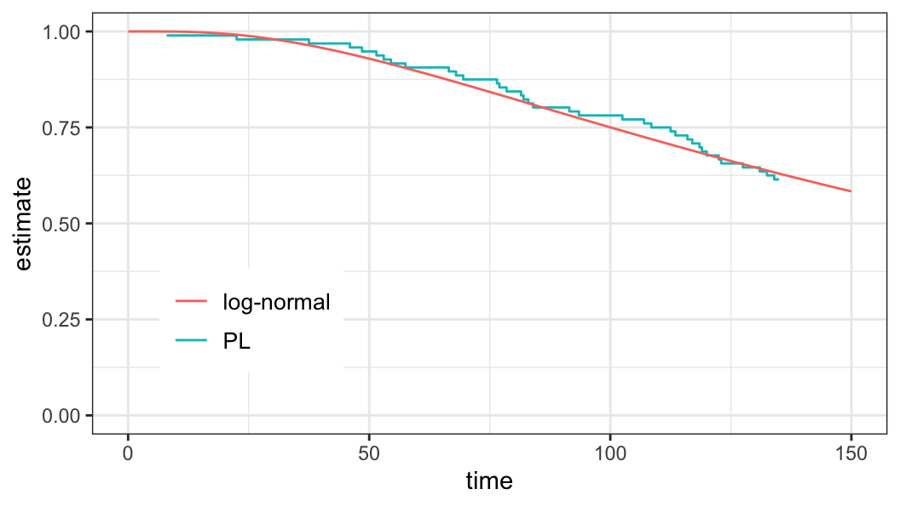
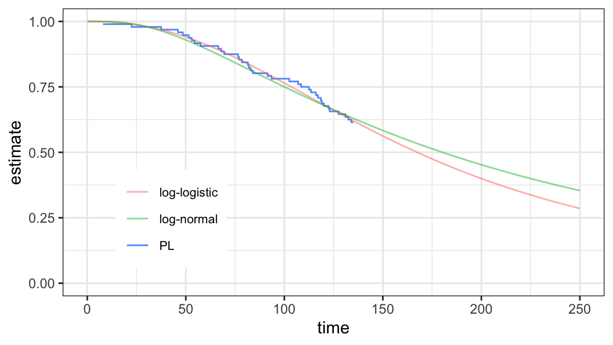
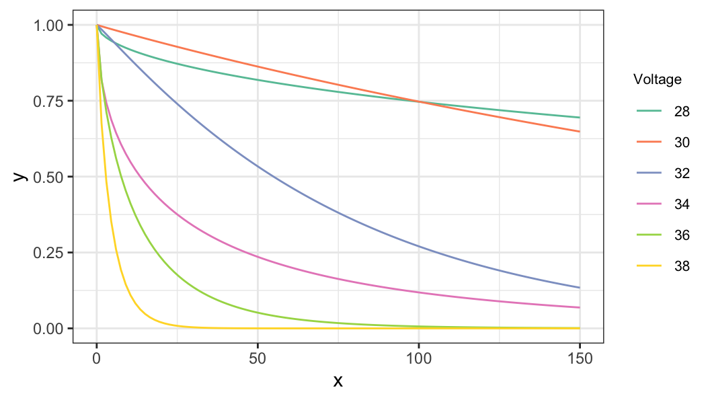
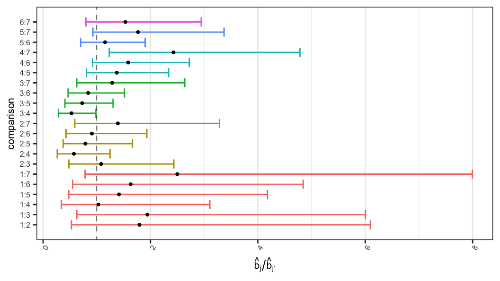
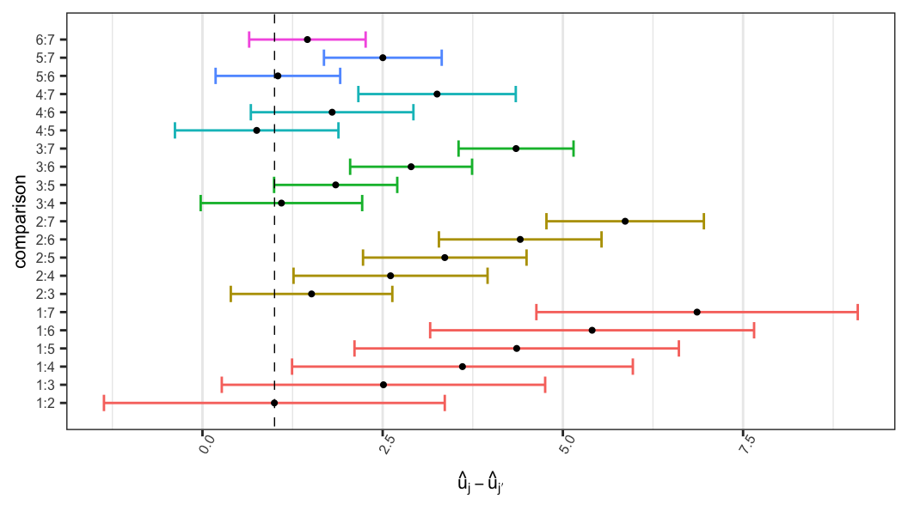
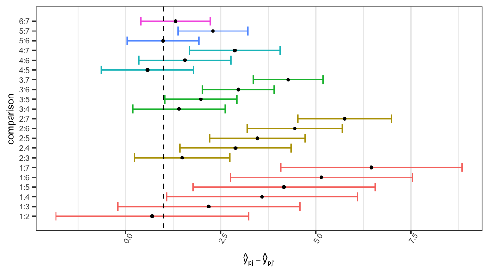

dat_ex531# A tibble: 96 × 2
time status
<dbl> <int>
1 22.5 1
2 37.5 1
3 46 1
4 48.5 1
5 51.5 1
6 53 1
7 54.5 1
8 57.5 1
9 66.5 1
10 68 1
# ℹ 86 more rows(AST305) Lifetime Data Analysis I
\(T\) follows a log-normal distribution with location parameter \(\mu\) and scale parameter \(\sigma\) if \(Y=\log T\sim\mathcal{N}(\mu, \sigma^2)\)
The pdf and survivor function of log-normal distribution \[\begin{aligned} f(t; \mu, \sigma) &= \frac{1}{\sigma t \sqrt{2\pi}}\exp\bigg[-\frac{1}{2}\bigg(\frac{\log t -\mu}{\sigma}\bigg)^2\bigg]\\[.35em] S(t; \mu, \sigma) & = 1 - \Phi\bigg(\frac{\log t -\mu}{\sigma}\bigg) \end{aligned}\]
\(\mu\) and \(\sigma\) are the parameters of both normal and log-normal distributions
\(\Phi(\cdot)\,\rightarrow\) cumulative distribution function of standard normal distribution
\(\phi(\cdot)\,\rightarrow\) pdf of standard normal distribution
\(z=(y-\mu)/\sigma\)
Density function of log-lifetime \[\begin{aligned} f(y; \mu, \sigma) &= \frac{1}{\sigma}f_0\Big(\frac{y-\mu}{\sigma}\Big) \\ &=\frac{1}{\sigma\sqrt{2\pi}}\exp\Big[-\frac{1}{2}\Big(\frac{y-\mu}{\sigma}\Big)^2\Big] \end{aligned}\]
Survivor function of log-lifetime \[\begin{aligned} S(y; \mu, \sigma) = S_0\bigg(\frac{y-\mu}{\sigma}\bigg) = 1 - \Phi\bigg(\frac{y-\mu}{\sigma}\bigg) \end{aligned}\]
Data \[ \big\{(t_i, \delta_i), \;i=1, \ldots, n\big\} \]
Log-likelihood function \[\begin{aligned} \ell(\mu, \sigma) & = \log \prod_{i=1}^n\Big[({1}/{\sigma})\,f_0(z_i)\Big]^{\delta_i}\,\Big[S_0(z_i)\Big]^{1-\delta_i}\\ &=-r\log \sigma + \sum_{i=1}^n \delta_i\log f_0(z_i) + \sum_{i=1}^n(1-\delta_i)\log S_0(z_i) \\ &= -r\log \sigma -\frac{1}{2}\sum_{i=1}^n \delta_iz_i^2 + \sum_{i=1}^n(1-\delta_i)\log S_0(z_i) \end{aligned}\]
\(z_i=(y_i - \mu)/\sigma\) and \(y_i=\log t_i\)
\(r = \sum_{i=1}^n \delta_i\)
MLEs \[\begin{aligned} (\hat\mu, \hat\sigma)' = {\arg\,\max}_{\Theta} \;\ell(\mu, \sigma) \end{aligned}\]
Confidence intervals of parameters, quantiles, and survival probabilities can be obtained using the methods described for Weibull models
Estimate of survivor function (Log-normal distribution) \[\begin{aligned} S(t; \hat\mu, \hat\sigma) &= 1 - \Phi\Big(\frac{\log t - \hat\mu}{\hat\sigma}\Big)\notag\\ &=1 - \Phi(\hat\psi) \end{aligned}\] where \[ \hat\psi = \Phi^{-1} \Big(1-S(t; \hat\mu, \hat\sigma)\Big)= \frac{\log t - \hat\mu}{\hat\sigma} \]
LRT statistics based method of obtaining CI for survivor function is described with \[H_0: S(y_0) = S(\log t_0)=s_0\]
The \(100(1-\alpha)\%\) CI for \(S(t)\) can be obtained from the values of \(s_0\) that satisfy \[ \Lambda(s_0)=2\ell(\hat\mu, \hat\sigma) - 2\ell(\tilde \mu, \tilde \sigma)\leq \chi^2_{(1), 1-\alpha} \]
Data are available on lifetimes (in thousand miles) of 96 locomotive controls, of which were failed.
The test was terminated after \(135K\) miles, so 59 lifetimes were censored at \(135K\).
dat_ex531# A tibble: 96 × 2
time status
<dbl> <int>
1 22.5 1
2 37.5 1
3 46 1
4 48.5 1
5 51.5 1
6 53 1
7 54.5 1
8 57.5 1
9 66.5 1
10 68 1
# ℹ 86 more rowsdat_ex531 %>%
count(status)# A tibble: 2 × 2
status n
<int> <int>
1 0 59
2 1 37Log-normal and normal model fit
mod_LN <- survreg(Surv(time, status) ~ 1,
dist = "lognormal",
data = dat_ex531)mod_N <- survreg(Surv(log(time), status) ~ 1,
dist = "gaussian",
data = dat_ex531)MLEs \((\hat\mu, \log\hat\sigma)\) and corresponding standard errors
tidy(mod_LN)# A tibble: 2 × 5
term estimate std.error statistic p.value
<chr> <dbl> <dbl> <dbl> <dbl>
1 (Intercept) 5.19 0.129 40.3 0
2 Log(scale) -0.136 0.131 -1.04 0.297Estimated variance of \((\hat\mu, \log\hat\sigma)\)
mod_LN$var (Intercept) Log(scale)
(Intercept) 0.01657557 0.00983969
Log(scale) 0.00983969 0.01703353 [,1] [,2]
[1,] 0.01657557 0.00858735
[2,] 0.00858735 0.01297359\[G = \begin{bmatrix} 1 & 0 \\ 0 & \exp(\sigma)\end{bmatrix}\]
| par | lower | upper | lower | upper |
|---|---|---|---|---|
| \(\mu\) | 4.942 | 5.447 | 5.000 | 5.400 |
| \(\sigma\) | 0.676 | 1.127 | 0.709 | 1.109 |
Estimate of \(S(80)\) \[\begin{aligned} S(80; \hat\mu, \hat\sigma) &= 1 - \Phi\Big(\frac{\log 80 - \hat\mu}{\hat\sigma}\Big)\\ &=0.824 \end{aligned}\]

`
| parameter | est | lower | upper |
|---|---|---|---|
| \(S(80)\) | 0.824 | 0.667 | 0.924 |
| \(p\) | \(w_p\) | \(\hat y_p\) | se | lower | upper |
|---|---|---|---|---|---|
| 0.25 | -0.674 | 4.606 | 0.105 | NA | NA |
| 0.50 | 0.000 | 5.195 | 0.129 | NA | NA |
| 0.75 | 0.674 | 5.783 | 0.194 | NA | NA |
Log-logistic distribution is a member of the log-location-scale family of distributions and the corresponding location-scale distribution is logistic with \[\begin{aligned} S_0(z) & =\frac{1}{1 + e^z} \\[.25em] f_0(z) & =\frac{e^z}{(1 + e^z)^2} \end{aligned}\]
Density function of log-lifetime \[\begin{aligned} f(y; u, b) &= \frac{1}{b}f_0\Big(\frac{y-u}{b}\Big) \\[.3em] &=\frac{(1/b)\,\exp\big[{(y-u)/b}\big]}{\big\{1 + \exp\big[(y-u)/b\big]\big\}^2} \end{aligned}\]
Survivor function of log-lifetime \[\begin{aligned} S(y; u, b) &= S_0\bigg(\frac{y-u}{b}\bigg) \\ & = \frac{1}{1 + \exp\big[(y-u)/b\big]} \end{aligned}\]
Data: \(\;\;\;\big\{(t_i, \delta_i), \;i=1, \ldots, n\big\}\)
Log-likelihood function \[\begin{aligned} \ell(\mu, \sigma) & = \log \prod_{i=1}^n\Big[({1}/{b})\,f_0(z_i)\Big]^{\delta_i}\,\Big[S_0(z_i)\Big]^{1-\delta_i}\notag\\ &=-r\log b + \sum_{i=1}^n \delta_i\log f_0(z_i) + \sum_{i=1}^n(1-\delta_i)\log S_0(z_i)\notag\\ &=-r\log b + \sum_{i=1}^n\Big[\delta_i\big\{z_i - \log(1+e^{z_i})\big\} - \log(1+e^{z_i})\Big]\notag %& = -r\log b + \sum_{i=1}^n\Big[\delta_i z_i + (1 - \delta_i)\log(1+e^{z_i})\Big] \end{aligned}\]
\(z_i=(y_i - u)/b\) and \(y_i=\log t_i\)
\(r = \sum_{i=1}^n \delta_i\)
MLEs \[\begin{aligned} (\hat u, \hat b)' = {\arg\,\max}_{\Theta} \;\ell(u, b) \end{aligned}\]
Sampling distribution \[\begin{aligned} (\hat u, \hat b)' \sim \mathcal{N}\Big((u, b)', V\Big) \end{aligned}\] where \[ \hat V = \Big[-H(\hat u, \hat b)\Big]^{-1} \]
Confidence intervals of parameters, quantiles, and survival probabilities can be obtained using the methods described for Weibull models
Estimate of survivor function (logistic distribution) \[\begin{aligned} S_0\Big(\frac{y-\hat u}{\hat b}\Big)=S(y; \hat u, \hat b) &= \frac{1}{1+\exp\big[(y -\hat u)/\hat b\big]} \\[.5em] \log\bigg[\frac{1-S(y)}{S(y)}\bigg] & = \frac{y-\hat u}{\hat b} = {\color{purple}\hat\psi} = S_0^{-1}\Big(S(y)\Big) \end{aligned}\]
\((1-\alpha)100\%\) CI of \(S(t)\)
\[\begin{aligned} L&<\psi < U\\ L &< \log \frac{1-S(y)}{S(y)} < U\\ \exp(L) &< \frac{1-S(y)}{S(y)} <\exp(U)\\ 1 + \exp(L) &< 1 + \frac{1-S(y)}{S(y)} <1 + \exp(L) \\ \frac{1}{1 + \exp(U)} &<S(y) < \frac{1}{1 + \exp(L)} \end{aligned}\] where \[\begin{aligned} L & = \hat\psi -z_{1-\alpha/2}\,se(\hat\psi) \\ U & = \hat\psi +z_{1-\alpha/2}\,se(\hat\psi) \end{aligned}\]
LRT statistics based method of obtaining CI for survivor function is described with \[H_0: S(y_0) = S(\log t_0)=s_0\]
The \(100(1-\alpha)\%\) CI for \(S(t)\) can be obtained from the values of \(s_0\) that satisfy \[ \Lambda(s_0)\leq \chi^2_{(1), 1-\alpha} \] where \[\begin{aligned} \Lambda(s_0) = 2\ell(\hat u, \hat b) - 2\ell(\tilde u, \tilde b) \end{aligned}\]
Data are available on lifetimes (in thousand miles) of 96 locomotive controls, of which were failed.
The test was terminated after \(135K\) miles, so 59 lifetimes were censored at \(135K\).
dat_ex531# A tibble: 96 × 2
time status
<dbl> <int>
1 22.5 1
2 37.5 1
3 46 1
4 48.5 1
5 51.5 1
6 53 1
7 54.5 1
8 57.5 1
9 66.5 1
10 68 1
# ℹ 86 more rowsdat_ex531 %>%
count(status)# A tibble: 2 × 2
status n
<int> <int>
1 0 59
2 1 37Log-logistic and logistic model fit
mod_LL <- survreg(Surv(time, status) ~ 1,
dist = "loglogistic",
data = dat_ex531)mod_L <- survreg(Surv(log(time), status) ~ 1,
dist = "logistic",
data = dat_ex531)MLEs \((\hat u, \log\hat b)\)
[1] 5.1206418 -0.8266704Estimated variance of \((\hat u, \log\hat b)\)
(Intercept) Log(scale)
(Intercept) 0.010490062 0.007837215
Log(scale) 0.007837215 0.022515937MLEs of \((\hat u, \hat b)\)
[1] 5.1206418 0.4375036Estimated variance of \((\hat u, \hat b)\)
[,1] [,2]
[1,] 0.010490062 0.003428809
[2,] 0.003428809 0.004309761| dist | par | est | lower | upper | lower | upper |
|---|---|---|---|---|---|---|
| Logistic | \(u\) | 5.121 | 4.920 | 5.321 | 5.000 | 5.300 |
| NA | \(b\) | 0.438 | 0.326 | 0.587 | 0.360 | 0.559 |
| Gaussian | \(\mu\) | 5.195 | 4.942 | 5.447 | 5.000 | 5.400 |
| NA | \(\sigma\) | 0.873 | 0.676 | 1.127 | 0.709 | 1.109 |
Estimate of \(S(80)\) (log-logistic distribution) \[\begin{aligned} S(80; \hat u, \hat b) &= \frac{1}{1 + \exp\big[(\log 80 - \hat u)/{\hat b}\big]}\\ &=0.844 \end{aligned}\]

`
| dist | est | lower | upper |
|---|---|---|---|
| Log-logistic | 0.844 | 0.566 | 0.957 |
| Log-normal | 0.824 | 0.667 | 0.924 |
| dist | \(p\) | \(w_p\) | \(\hat y_p\) | se | lower | upper |
|---|---|---|---|---|---|---|
| Logistic | 0.25 | -1.099 | 4.640 | 0.143 | NA | NA |
| NA | 0.50 | 0.000 | 5.121 | 0.102 | NA | NA |
| NA | 0.75 | 1.099 | 5.601 | 0.234 | NA | NA |
| Gaussian | 0.25 | -0.674 | 4.826 | 0.101 | NA | NA |
| NA | 0.50 | 0.000 | 5.121 | 0.102 | NA | NA |
| NA | 0.75 | 0.674 | 5.416 | 0.177 | NA | NA |
Let \(T_{ji}\) be the lifetime of \(i\)th subject of the \(j\)th group (\(i=1, \ldots, n_j\), \(j=1, \ldots, m\))
Assume \(T_{ji}\) follows a distribution of log-location-scale family with parameters \(\alpha_j\) (scale) and \(\beta_j\) (shape)
The corresponding distribution of log-lifetime \(Y_{ji}=\log T_{ji}\) is of a location-scale family distribution with parameters \(u_j\) (location) and \(b_j\) (scale) \[u_j = \log\alpha_j \;\; \text{and} \;\;b_j = (1/\beta_j)\]
The survivor function of \(Y_{ji}=\log T_{ji}\) \[\begin{aligned} S_j(y) = S_0\Big(\frac{y-u_j}{b_j}\Big) \end{aligned}\]
The survivor function of \(T_{ji}\) \[\begin{aligned} S_j(t) = S_0^\star\big[(t/\alpha_j)^{\beta_j}\big] \end{aligned}\]
\(S_0^\star(x) = S_0(\log x)\)
\(u_j = \log \alpha_j\)
\(b_j = (1/\beta_j)\)
When the scales are not equal (i.e. \(b_1\neq b_2\)), the difference between the \(p\)th quantiles does depend on the probability \(p\) \[\begin{aligned} y_{1p} - y_{2p} = u_1 - u_2 + w_p(b_1 - b_2) \end{aligned}\]
Under the assumption of equality of the scales (i.e. \(b_1 = b_2\)), difference between \(p\)th (log-lifetime) quantile of a pair of populations (say 1 and 2) is constant, i.e. it does not depend on the probability \(p\in (0, 1)\) \[ \begin{aligned} y_{1p} - y_{2p} = u_1 - u_2 \end{aligned} \]
The difference between two log-lifetime quantiles can be expressed in terms of the ratio of lifetime quantiles \[ \begin{aligned} y_{1p} - y_{2p} &= u_1 - u_2 \\[,25em] \log t_{1p} - \log t_{2p} &= \log \alpha_1 - \log \alpha_2 \\[.25em] t_{1p}/t_{2p} & = \alpha_1/\alpha_2 \end{aligned} \]
The ratio of the \(p\)th quantiles of two lifetime distributions does not depend on the probability \(p\) when the corresponding shape parameters are equal \((\beta_1=\beta_2)\)
Equality of all quantiles of two distributions, i.e. \[y_{1p}=y_{2p}\;\;\forall\;p\in(0, 1),\] corresponds to equality of two distributions, i.e. \[S_1(y)=S_2(y)\]
Under the assumption of common scale (shape for lifetime) parameter, the null hypothesis of equality of two distributions can be expressed as \[\begin{aligned} H_0: u_1-u_2=0\;\;\;\text{or}\;\;\;H_0:(\alpha_1/\alpha_2)=1 \end{aligned}\]
Equality of two populations with survivor functions (say \(S_1\) and \(S_2\)) can be expressed in terms of survivor functions
Since \[y_{1p}= y_{2p} + u_1 - u_2 \;\;\text{or}\;\; t_{1p}=t_{2p}(\alpha_1/\alpha_2),\] the corresponding survivor functions can be expressed as \[\begin{aligned} S_1(y + u_1 -u_2) = S_2(y)\\[.25em] S_1\big(t(\alpha_1/\alpha_2)\big) = S_2(t) \end{aligned}\]
That is, the survivor functions for \(Y\) are translations of one another by an amount \((u_1 - u_2)\) along the \(y\)-axis
Data \(\;\;\;\big\{(t_{ji}, \delta_{ji}), i=1, 2\big\}\) and \(y_{ji}=\log t_{ji}\)
Two populations can be compared in terms of \(p\)th quantile \[ H_0: y_{1p} = y_{2p} \]
Corresponding pivotal quantity \[ Z_p = \frac{(\hat y_{1p}-\hat y_{2p})-(y_{1p}-y_{2p})}{\big[\operatorname{var}(\hat y_{1p}) + \operatorname{var}(y_{2p})\big]^{1/2}}\sim \mathcal{N}(0, 1)\;\;\text{under $H_0$} \]
To test \(H_0: b_1=b_2\), the following pivotal quantity can be considered \[ Z_b = \frac{(\log \hat b_1 - \log \hat b_2) - (\log b_1 - \log b_2)}{[\operatorname{var}(\log \hat b_1) + \operatorname{var}(\log \hat b_2)]^{1/2}}\sim \mathcal{N}(0, 1)\;\;\text{under $H_0$} \]
When scales are equal, two populations can be compared with respect their location parameter \(H_0: u_1 = u_2\)
The corresponding pivotal quantity \[ Z_u = \frac{( \hat u_1 - \hat u_2) - ( u_1 - u_2)}{[\operatorname{var}(\hat u_1) + \operatorname{var}(\hat u_2)]^{1/2}}\sim \mathcal{N}(0, 1)\;\;\text{under $H_0$} \]
Data \(\;\;\big\{(t_{ji}, \delta_{ji}), j=1, \ldots, m, i=1, \ldots, n_j\big\}\) and \(y_{ji}=\log t_{ji}\)
Different tests and confidence intervals of interest
\(H_0: b_1=\cdots=b_m\)
Confidence interval for \((b_1/b_2)\)
Equality of several location parameters when scale parameters are equal \[\begin{aligned} H_0&: u_1=\cdots=u_m, b_1=\cdots=b_m \\ H_1&: \text{all $u_j$'s are not equal}, b_1=\cdots=b_m \end{aligned}\]
Confident interval for \((u_1-u_2)\) when \(b_1=b_2\)
Confidence interval for \((y_{1p}-y_{2p})\) when \(b_1\neq b_2\)
Hypothesis of interest \[ H_0: b_1=\cdots = b_m = b \;\;(\text{say}) \tag{5.1}\]
Log-likelihood function \[\begin{aligned} \ell(u_1, \ldots, u_m, b_1, \ldots, b_m) & = \sum_{j=1}^m\ell_j(u_j, b_j) \end{aligned}\]
Contribution to log-likelihood function for the \(j\)th population \[\begin{aligned} \ell_j(u_j, b_j) = -r_j\log b_j + \sum_{i=1}^{n_j}\Big[\delta_i\log f_0(z_{ji}) + (1 - \delta_{ji})\log S_0(z_{ji})\Big]\notag \end{aligned}\]
LRT statistic \[\begin{aligned} \Lambda & =2\ell(\hat u_1, \ldots, \hat u_m, \hat b_1, \ldots, \hat b_m) -2\ell(\tilde u_1, \ldots, \tilde u_m, \tilde b, \ldots, \tilde b) \end{aligned}\]
MLEs
\((\hat u_j, \hat b_j)' = {\arg\,\max}_{\Theta} \;\ell_j(u_j, b_j),\;\;j=1, \ldots, m\)
\((\tilde u_1, \ldots, \tilde u_m, \tilde b, \ldots, \tilde b)' = {\arg\,\max}_{\Theta}\,\ell( u_1, \ldots, u_m, b, \ldots, b)\)
To obtain confidence interval of \((b_1/b_2)\), consider \[H_0: (b_1/b_2) = a \;\;\Rightarrow\;\;H_0: b_1 =ab_2\]
\(100(1-\alpha)\%\) confidence interval of \((b_1/b_2)\) can be obtained from the range of \(a\) values that satisfy \[\Lambda(a)\leq \chi^2_{(1), 1-\alpha},\] where the LRT statistic \[\Lambda(a) = 2\ell(\hat u_1, \hat u_2, \hat b_1, \hat b_2)- 2\ell(\tilde u_1, \tilde u_2, a\tilde b_2,\tilde b_2)\]
\((\hat u_j, \hat b_j)' = {\arg\,\max}_{\Theta} \;\ell_j(u_j, b_j),\;\;j=1, 2\)
\((\tilde u_1, \tilde u_2, \tilde b_2)' = {\arg\,\max}_{\Theta}\,\ell( u_1, u_2, ab_2, b_2)\)
MLEs
under \(H_0,\;\;\) \((u^\star, b^\star) = {\arg\,\max}_{\Theta}\,\ell(u, \ldots, u, b, \ldots, b)\)
under \(H_1,\;\;\) \((\tilde u_1, \ldots, \tilde u_m, \tilde b) = {\arg\,\max}_{\Theta}\,\ell(u_1, \ldots, u_m, b, \ldots, b)\)
LRT statistic \[ \Lambda = 2\ell(\tilde u_1, \ldots, \tilde u_m, \tilde b, \ldots, \tilde b) - 2\ell(u^\star, \ldots, u^\star, b^\star, \ldots, b^\star) \]
To obtain a confidence interval of \((u_1 - u_2)\) when \(b_1=b_2\), consider the null and alternative hypothesis \[\begin{aligned} H_0: u_1-u_2=\delta, \;b_1=b_2\;\;\;\text{vs}\;\;\;H_1: u_1-u_2\neq \delta, \;b_1=b_2 \end{aligned}\]
LRT statistic \[ \Lambda(\delta) = 2\ell(\tilde u_1, \tilde u_2, \tilde b, \tilde b) - 2\ell(u_2^\star + \delta, u_2^\star, b^\star, b^\star) \]
under \(H_0,\;\;\) \((u^\star, b^\star) = {\arg\,\max}_{\Theta}\,\ell(u, u, b, b)\)
under \(H_1,\;\;\) \((\tilde u_1, \tilde u_2, \tilde b) = {\arg\,\max}_{\Theta}\,\ell(u_1, u_2, b, b)\)
\(100(1-\alpha)%\) confidence interval for \((u_1-u_2)\) can be obtained from the set of \(\delta\) values that satisfy \(\Lambda(\delta) \leq \chi^2_{(1), 1-\alpha}\)
under \(H_0\) \[(\tilde u_1, \tilde u_2, \tilde b_1, \tilde b_2) = {\arg\,\max}_{\Theta}\,\ell(u_2 + \Delta + (b_2-b_1)w_p, u_2, b_1, b_2)\]
under \(H_1\) \[(\hat u_1, \hat u_2, \hat b_2, \hat b_1) = {\arg\,\max}_{\Theta}\,\ell(u_1, u_2, b_1, b_2)\]
\(100(1-\alpha)%\) confidence interval for \((y_{1p}-y_{2p})\) can be obtained from the set of \(\Delta\) values that satisfy \(\Lambda(\Delta) \leq \chi^2_{(1), 1-\alpha}\)
Assume \(T_{ji}\sim \text{Weibull}(\alpha_j, \beta_j)\) \((j=1, \ldots, m,\;\;i=1, \ldots, n_j)\)
Survivor function of Weibull distribution \[ S_j(t) = \exp\big[-(t/\alpha_j)^{\beta_j}\big] \]
Survivor function of extreme value distribution \[ S_j(y) = \exp\big[-e^{(y-u_j)/b_j}\big] \]
\(u_j = \log \alpha_j\)
\(b_j = 1/\beta_j\)

| voltage | \(\hat u_j \pm se(\hat u_j)\) | \(\hat b_j \pm se(\hat b_j)\) |
|---|---|---|
| 26 | \(6.862 \pm 1.104\) | \(1.834 \pm 0.885\) |
| 28 | \(5.865 \pm 0.486\) | \(1.022 \pm 0.474\) |
| 30 | \(4.351 \pm 0.302\) | \(0.944 \pm 0.303\) |
| 32 | \(3.256 \pm 0.486\) | \(1.781 \pm 0.254\) |
| 34 | \(2.503 \pm 0.315\) | \(1.297 \pm 0.211\) |
| 36 | \(1.457 \pm 0.309\) | \(1.125 \pm 0.221\) |
| 38 | \(0.001 \pm 0.273\) | \(0.734 \pm 0.367\) |

Null hypothesis \[ H_0: b_1 = \cdots = b_7 \]
LRT statistic \[\begin{aligned} \Lambda & = 2\ell(\hat u_1, \ldots, \hat u_7, \hat b_1, \ldots, \hat b_7) - 2\ell(\tilde u_1, \ldots, \tilde u_7, \tilde b, \ldots, \tilde b) \\ & = 2(-132.181) - 2(-136.578) \\ & = 8.794 \end{aligned}\]
Wald-type \[\begin{aligned} (\log \hat b_1 - \log \hat b_2) &\pm z_{1-\alpha/2}\,se(\log \hat b_1 - \log \hat b_2) \\[.25em] (\hat b_1/\hat b_2)&\;e^{\pm z_{1-\alpha/2}\,se(\log \hat b_1 - \log \hat b_2)}\\[.25em] (1.834 / 1.022)&\;e^{\pm\,(1.96)(0.624)}\\[.25em] 0.529 & < (b_1/b_2) <6.095 \end{aligned}\]

Equality of all location parameters when scales are equal \[ H_0: u_1 = \cdots = u_m, \; b_1=\cdots = b_m \]
LRT statistic \[\begin{aligned} \Lambda & = 2\ell(\tilde u_1, \ldots, \tilde u_m, \tilde b, \ldots, \tilde b)-2\ell(u^{\star}, \ldots, u^{\star}, b^{\star}, \ldots, b^{\star})\\[.25em] &= 2(-136.578) - 2(-176.584) \\[.25em] &= 80.013 \end{aligned}\]
Wald-type confidence interval of \((u_1-u_2)\) \[\begin{aligned} (\hat u_1 - \hat u_2) &\pm z_{1-\alpha/2}\;se(\hat u_1 - \hat u_2) \\[.25em] (6.862 - 4.351) &\pm (1.96)(1.206) \\[.25em] -1.367 &<(u_1 - u_2) < 3.361 \end{aligned}\]

General expression of \(p\)th quantile of the group \(j\) \[ y_{jp} = u_j + b_j w_p, \;j=1, \ldots, m \]
Difference of \(p\)th quantile between groups 1 and 2 \[ y_{1p} - y_{2p} = u_1 - u_2 + (b_1 - b_2)w_p \]
